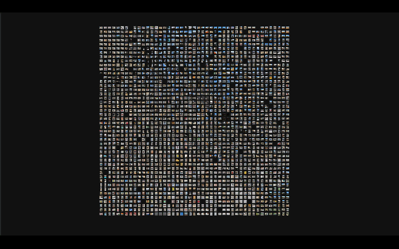
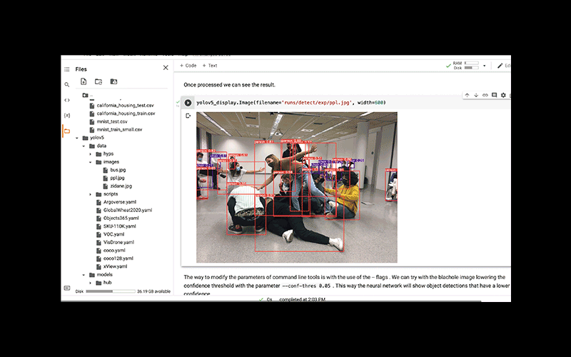
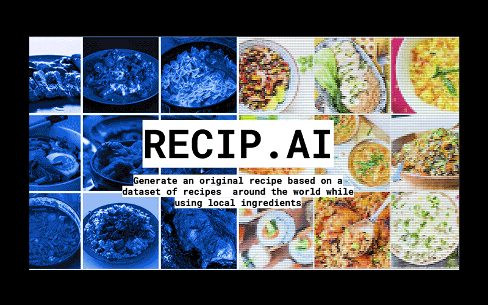

Extended Intelligences & Designing with AI
Designing with AI
In the first week, we learned about machine learning and artificial intelligence with members of Taller Estampa.
We started with an introduction to artificial intelligence and how the neural networks, datasets, and the training process works.
It seemed like the workings of the neural networks are a mystery, but we have control through the amount of
For our first assignment, we had to submit 100 photos of Poblenou (old and new) and 100 photos that were last taken on our phones in order to train neural networks.
Overnight, Pau input our data to train the image sorting neural network in order to present the results to us in the next couple days.
The images below show the outcome of this training:

In the following days, we experimented with different neural network systems through Google Colabs.
Some of the networks included image identification, latent space, and deep fake.
The results were very interesting but the process still remained mysterious, since the notebook was already made step by step for us to press play and execute.
I'd like to learn more about these AI and machine learning tools to be able to manage and experiment with them more.

Assignment: Speculative AI Design
For our speculative design project, our group decided to work with food from around world.
We wanted to create a tool using AI that can generate original recipes using components of recipes from cultures around the world.
In addition to the recipe, we wanted to add a feature for the AI to suggest local ingredients as a substitution.
We determined that we would need two datasets based on text: recipes from around the world and local ingredients from every country. And one image dataset of pictures of cooked dishes.
Then we would train the selected neural network to classify and separate the text from the ingredients and the another neural network to classify the ingredients from the images.
From this, the AI will create a new recipe from user selected countries on the map and be able to create a visual representation of it.
You can find more details in our presentation.

Extended Intelligences
In the second week, we dove deeper into artificial intelligence, its history, ethics and social impacts with Lucas Lorenzo Pena and Ramon Sanguesa. Starting from the very beginning, we asked the question, what is intelligence? We all seemed to have slightly different answers to this question, which established that intelligence is subjective and qualitative rather than concrete. We moved on to learn about the history and development of AI and machine learning, inlcuding Turing's Imitation game (1950) and Searle's Chinese Room (1980). It was interesting how with each development, the question of intelligence became more philosophical and less concrete. Why are we so interested in creating systems which are "intelligent"? Are we trying to create a clone of ourselves? We looked at animistic design and ethicsAssignment: Desiging with AI
Our assigment this week was to create a new product which uses artificial intelligence to solve a problem.
After some discussion and sharing our personal experiences, our group decided to explore the topic of anxiety.
More specifically, the anxiety of being in crowded public spaces like airports due to COVID-19.
It was a common experience that we could all relate to and shared.
The experience of anxiety is heavily rooted in the body as well as the mind; as we start to feel a sense of doom in our minds, our heart beat rises, our breath shortens, we start to sweat, and can even start to feel sick in our stomach.
We looked at the different ways that these signs of anxiety could be measured (biometric data, noise level, temperature, ECG, and motion) and that became our input for the AI.
We thought that the product had to be a wearable because the biometric data, but also something that can be easily take on and off so that it can be used only when needed.
Discreteness was also a big factor in designing the product. We wanted the user to feel safe when they're feeling anxious and not drawing unwanted attention, which may produce more anxiety.
So we came up with the form of a smart ring called R3RING.
The user can put on this ring when they know they will be in crowded spaces or any situation which will give them anxiety.
This ring will detect the user's anxiety level through the inputs mentioned above, and provide multiple levels of coping mechanisms for the user.
The ring is connected to your modible device using the internet of things, and will display messages through an application on your phone.
Using GPS, the ring will find less crowded spaces nearby for the user to relax and breathe in.
As the anxiety worsens, the ring will connect to your phone and send a private message to your emergency contact, letting them know the location and status of the user.
The app will also log all of the inputs and outputs so the user can keep track and work on their anxiety patterns in the long term.
We were also asked to look at the negative consequences, business values, and ethics of our product.
Like many other assistive technology, the user can become dependent on the product, the product and company can use the users data for unethical purposes, or share the users data in ways that only benefit the company.
A key business value would be to work with other companies such as airlines, to advertise this anxiety ring for existing customers.
Finally, the ethics of this product were not all positive, as it isn't a long-term solution to anxiety but a short-term fix that could potentially cause dependency.
We also found problematic the issue of personal data collection and usage.